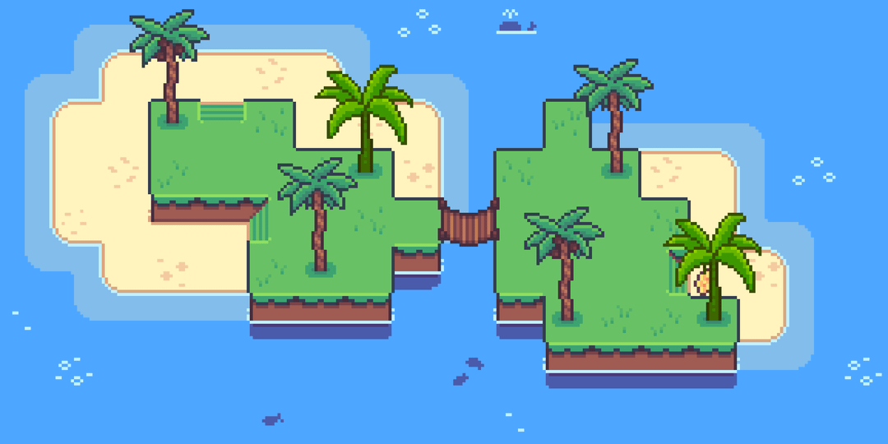
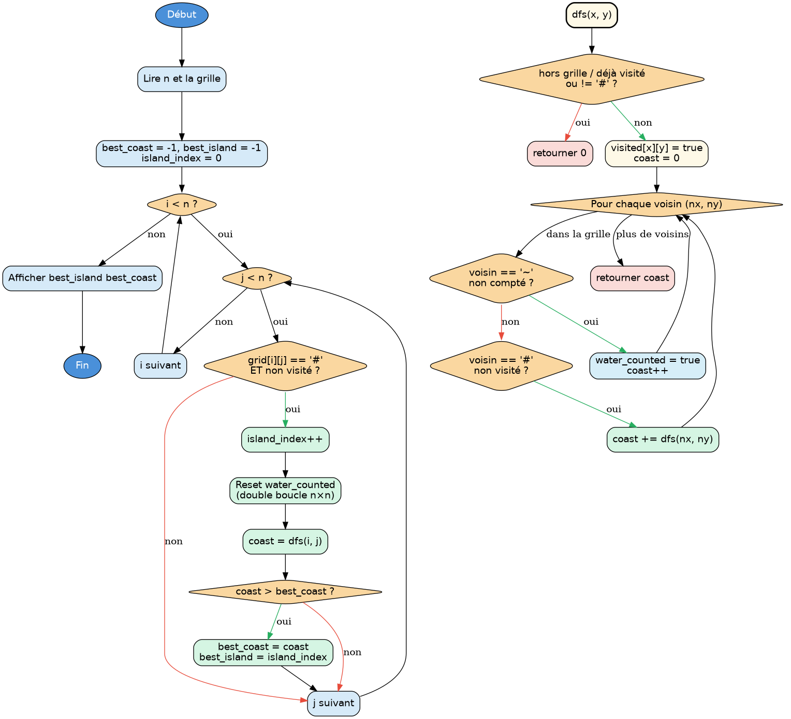

Rapport - Longest Coast Island
Table des matières
Lien vers le puzzle sur CodingGame

1. Introduction
Longest Coast Island est un exercice CodingGame. On a une grille n×n composée de cases d’eau (~) et de blocs de terre (#). Les blocs connectés horizontalement et verticalement forment des îles. L’objectif est de trouver l’île dont le littoral est le plus long, et d’afficher son index ainsi que la longueur de ce littoral.
Le littoral d’une île est le nombre de cases ~ distinctes adjacentes (haut, bas, gauche, droite) à au moins un bloc de cette ile. Les cases hors de la grille ne comptent pas.
Les iles sont numérotés dans l’ordre de découverte (parcourt la grille ligne par ligne, colonne par colonne, et chaque nouveau bloc non visité marque le début d’une nouvelle île.) En cas d’égalité, on retient l’île d’index le plus petit.
2. Analyse du problème
2.1. Structure de l’entrée
La première ligne contient un entier n, la taille de la grille. Puis n
lignes de n caractères : ~ (eau) ou # (terre).
5 ~~~~# ~~~## ~~~~~ ~##~~ ~~~~~
2.2. La difficulté principale - le double comptage
La vraie difficulté n’est pas le parcours en lui même, c’est d’éviter de
compter deux fois la même case ~. Si deux blocs # sont adjacents à la même
case d’eau, elle ne doit contribuer qu’une seule fois au littoral de l’île.
Dans l’exemple ci-dessus, l’île 2 à deux blocs adjacents. Chaque bloc à 3 voisins ~, mais ils ne partagent aucun voisin en commun, donc le total est bien 6. Sur une configuration différente, sans protection contre le double comptage, on pourrait facilement sur-estimer le littoral.
3. Méthode de résolution

Pour éviter le double comptage on utilise un tableau booléen water_counted
remis à false avant chaque île. Pendant le DFS, chaque case ~ n’est
comptée que si elle n’a pas encore été marquée pour cette île. La condition
stricte > dans la comparaison garantit qu’en cas d’égalité de littoral,
c’est la première île (plus petit index) qui est conservée.
4. Code commenté
#include <stdlib.h> #include <stdio.h> #include <string.h> #include <stdbool.h> int n; char grid[50][51]; /* grille de jeu : n lignes de n caractères (# ou ~) */ bool visited[50][50]; /* true si ce bloc # a déjà été exploré par le DFS */ bool water_counted[50][50]; /* true si cette case ~ a déjà été comptée pour l'île en cours. Remis à false avant chaque nouvelle île. */ /* vecteurs de déplacement pour les 4 directions */ int dx[] = {0, 0, 1, -1}; int dy[] = {1, -1, 0, 0}; /* dfs parcourt récursivement tous les blocs # connectés à (x, y) et retourne le nombre de cases ~ distinctes adjacentes à l'île. water_counted (remis à zéro avant chaque île) garantit qu'une case ~ adjacente à plusieurs blocs de la même île n'est comptée qu'une fois. */ int dfs(int x, int y) { if (x < 0 || x >= n || y < 0 || y >= n) return 0; // hors grille if (visited[x][y]) return 0; // déjà exploré if (grid[x][y] != '#') return 0; // pas de la terre visited[x][y] = true; int coast = 0; for (int d = 0; d < 4; d++) { int nx = x + dx[d]; int ny = y + dy[d]; if (nx >= 0 && nx < n && ny >= 0 && ny < n) { if (grid[nx][ny] == '~') { /* compter la case eau seulement si elle ne l'a pas déjà été * pour cette île c'est là qu'on evite le double comptage */ if (!water_counted[nx][ny]) { water_counted[nx][ny] = true; coast++; } } else if (grid[nx][ny] == '#') { coast += dfs(nx, ny); } } } return coast; } int main() { scanf("%d", &n); fgetc(stdin); for (int i = 0; i < n; i++) { scanf("%[^\n]", grid[i]); fgetc(stdin); } int best_island = -1; int best_coast = -1; int island_index = 0; for (int i = 0; i < n; i++) { for (int j = 0; j < n; j++) { if (grid[i][j] == '#' && !visited[i][j]) { island_index++; /* reset obligatoire avant chaque île : sans ça, une case ~ déjà comptée pour l'île précédente ne serait pas recomptée pour la nouvelle, même si elle lui est aussi adjacente. coût : O(n²) à chaque île, point le moins optimal de cette solution par rapport à la version avec identifiants. */ for (int r = 0; r < n; r++) for (int c = 0; c < n; c++) water_counted[r][c] = false; int coast = dfs(i, j); // condition stricte > : en cas d'egalité on garde la première île if (coast > best_coast) { best_coast = coast; best_island = island_index; } } } } printf("%d %d\n", best_island, best_coast); return 0; }
5. Tests
Sur l’exemple donné dans la présentation :
5 ~~~~# ~~~## ~~~~~ ~##~~ ~~~~~
On identifie deux îles :
- Île 1 : les blocs
#en (0,4), (1,3) et (1,4). Cases ~ distinctes adjacentes : (0,3), (1,2), (2,3), (2,4) littoral = 4 - Île 2 : les blocs
#en (3,1) et (3,2). Cases ~ distinctes adjacentes : (2,1), (4,1), (3,0), (2,2), (4,2), (3,3) littoral = 6
Le programme renvoie donc :
2 6
Ce qui correspond bien à l’île numéro 2 avec une côte de 6.
On peut aussi tester un cas limite : une grille avec une seule île isolée au centre.
3 ~~~ ~#~ ~~~
Une seule île, entourée de 4 cases d’eau dans les 4 directions :
1 4
Et un dernier cas avec deux blocs # qui partagent un voisin ~ en commun (pour
vérifier que le double comptage est bien évité) :
3 ~~~ ##~ ~~~
Les deux blocs adjacents partagent le voisin ~ en (0,0) et (2,0). Sans protection,
on compterait (0,0) et (2,0) deux fois. Avec water_counted, le total est bien 6 :
1 6
6. Solution alternative - MJZ
MJZ adopte une approche destructive/restauration : plutôt que d’un tableau
de marquage séparé, elle modifie directement les caractères de la grille. Un
bloc # visité devient X, une case ~ comptée devient W. Après le
traitement de chaque île, restore_water reparcourt la grille pour remettre
les W en ~.
#include <stdio.h> int n, islands, water[100]; char map[50][51]; int count_water(int r, int c) { if (r < 0 || r >= n) return 0; if (c < 0 || c >= n) return 0; if (map[r][c] == '~') { map[r][c] = 'W'; /* marquer la case eau comme comptée */ return 1; } if (map[r][c] == '#') { map[r][c] = 'X'; /* marquer le bloc comme visité */ return count_water(r+1, c) + count_water(r, c+1) + count_water(r-1, c) + count_water(r, c-1); } return 0; } void restore_water() { for (int r = 0; r < n; r++) for (int c = 0; c < n; c++) if (map[r][c] == 'W') map[r][c] = '~'; /* restaurer les ~ pour la prochaine île */ } int main() { scanf("%d", &n); for (int r = 0; r < n; r++) scanf("%s", map[r]); for (int r = 0; r < n; r++) for (int c = 0; c < n; c++) if (map[r][c] == '#') { water[islands++] = count_water(r, c); restore_water(); } int imax = 0; for (int i = 1; i < islands; i++) if (water[imax] < water[i]) imax = i; printf("%i %i", imax + 1, water[imax]); }
La différence principale avec ma solution est la façon dont on évite le double
comptage. Moi j’utilise un tableau externe water_counted que je remets à
false avant chaque île. MJZ n’a aucun tableau auxiliaire : elle marque
directement dans la grille, en remplaçant ~ par W et # par X. Le
résultat est le même, mais la mécanique est inversée.
Autre différence notable : ma fonction dfs retourne un entier et accumule le
littoral au fur et à mesure de la récursion. Chez MJZ, count_water fait la
même chose mais elle est aussi appelée sur les cases ~, ce qui lui permet de
gérer eau et terre dans une seule fonction récursive sans boucle sur les 4
directions.
7. Bilan
L’exercice était globalement accessible, le DFS sur grille se met en place
assez naturellement une fois qu’on a compris le principe. Le seul vrai point de
blocage était le double comptage des cases que je n’avais au début pas
anticipé . Une fois le tableau water_counted en place avec son reset, tout s’est débloqué assez vite.
En comparant avec la solution de MJZ, je réalise que modifier directement la grille est une technique à retenir : ça évite de devoir synchroniser deux structures en parallèle.